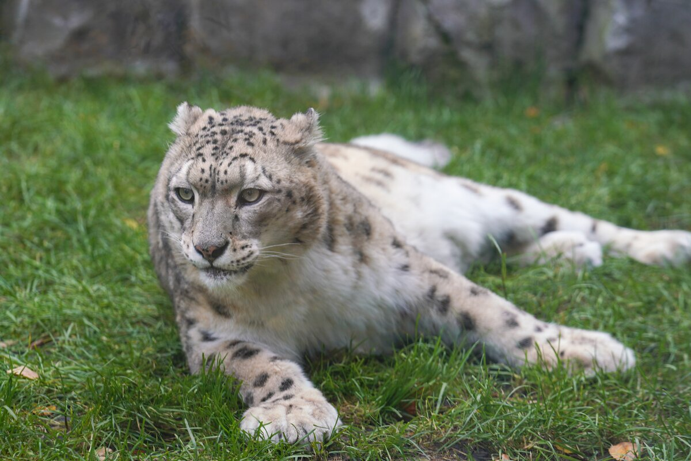
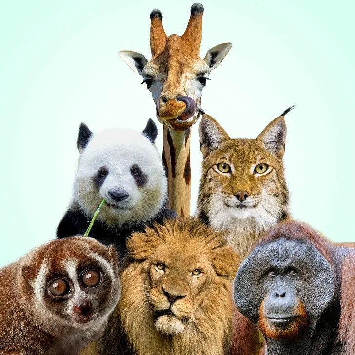
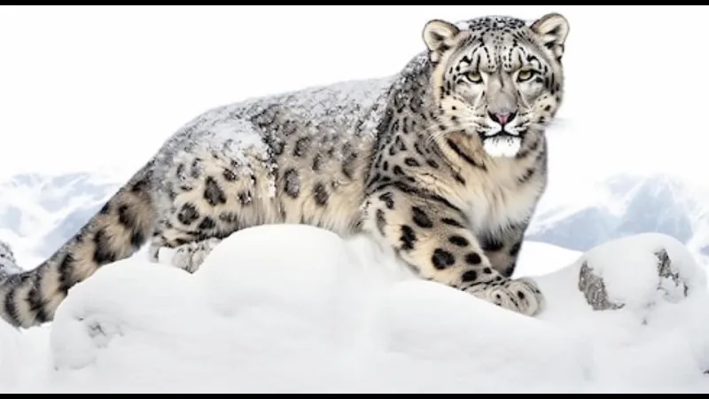

Кто это такой

Снежный барс, или ирбис - крупное хищное млекопитающее семейства кошачьих, обитающее в горах Центральной Азии. Живет на высоте 2000-5500 метров, предпочитает скалистые ущелья и альпийские луга
Длинна тела вместе с хвостом достигает 2 метров, а вес - до 55 кг. Густой дымчато-серый мех с темными пятнами делает его почти незаметным на фоне скал и снега
Интересные факты
- Хвост ирбиса длинной почти с само тело - помогает держать равновессие на скалах.
- Прыгает в длинну до 9 метров.
- Вид занесен в красную книгу и находится под охраной.
- Охотится в одиночку, чащевсего на горных козлов и баранов.
- В дикой природе осталось около 4000-7000 особей.
Галерея

